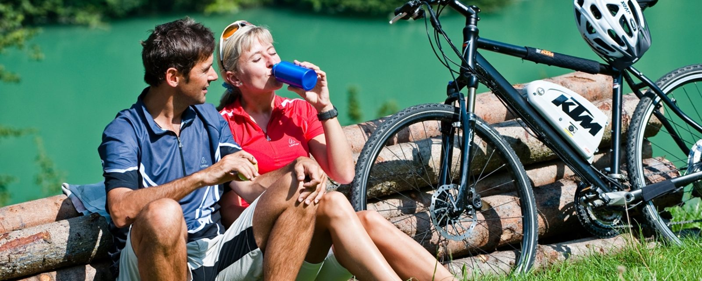
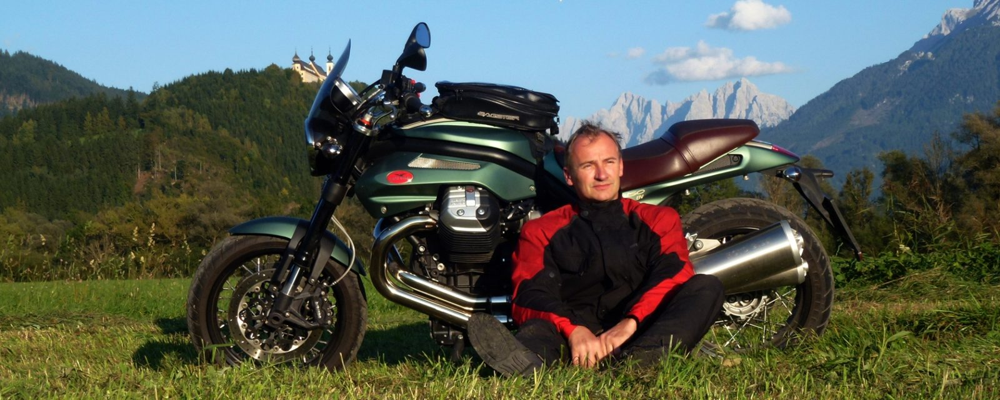

Rund ums Rad
- Absperrbare Bike-Garage
- Bike Service Corner mit Montageständer, Radwerkzeug und Schmiermitteln
- Ersatzteilverkauf
- Waschplatz für Räder
Der Ennsradweg führt am Haus vorbei, 800 km Mountainbikestrecken liegen vor der Haustüre, und für Motorradfahrer liegen Roadbooks für zehn Tage bereit.

Eine Kooperation aus dem Enns- und Steyrtal, die Mountainbikern besonderen Service bieten möchte. 800 km Mountainbikestrecken liegen vor unseren Haustüren.
Was wir im Haus für Sie bereithalten – neben „gesunder Kost“ und „angenehmer Ruh“:
Im Gegensatz zum Donauradweg anspruchsvoller, mit abwechslungsreichem Auf und Ab. Gerne wird er als mehrtägige Fahrt unternommen – vom Ursprung der Enns nahe Radstadt bis zur Mündung in die Donau bei Enns.
Faszinierende 75 km führen durch Geschichte und Kultur: Start im alten Markt Weyer, der große Bedeutung in der Eisenverarbeitung hatte, weiter am Ennsmuseum bei Küpfern vorbei bis nach Steyr und Enns.
Rund 56 abenteuerliche Kilometer, 622 Höhenmeter, Fahrzeit etwa 4 bis 6 Stunden. Gemütlich auf flachem Schotterweg entlang des Großen Baches bis ins Herz des Nationalparks.
Ein Großteil der Strecke verläuft auf der ehemaligen Trasse der Waldbahn, die 1971 zum letzten Mal fuhr. Erlebnisstationen, die Rekonstruktion einer Holzriese und einer Lafthütte und zahlreiche Tunnels machen die Tour besonders reizvoll.
Mehr als 500 km beschilderte Rad- und Mountainbikewege, von familienfreundlich bis wettkampferprobt, stehen in der Nationalpark-Region Ennstal und im Steyrtal zur Verfügung.
Zahlreiche Almen und Hütten im und um den Nationalpark Kalkalpen sind ideale Einkehrmöglichkeiten. Ein ausgedehntes Netz an MTB-Strecken führt direkt vom Haus weg.
Im Herzen Österreichs, im Voralpenland und in unmittelbarer Nähe zweier Nationalparks finden Sie tagelangen Kurvenspaß. Bei uns fangen die Berge gerade an, Berge zu werden: Kurven ohne Ende, Straßen, die noch nicht überlastet sind, und eine traumhafte Landschaft dazu.
Wir sind langjähriger Tourenfahrer-Partnerbetrieb. Der Hausherr ist selbst Motorrad- und Gespannfahrer und genießt mit seiner Guzzi regelmäßig die Landstraßen der Umgebung.
Wir bieten uns auch als idealer Zwischenstopp auf Touren nach Kroatien oder Ungarn an – oder als zentrales Basislager für Fahrten rund um den Nationalpark Kalkalpen, in die Wachau oder ins Salzkammergut.
Die Roadbooks erhalten Sie vor Ort oder schon zur Planung als PDF per E-Mail.


Die alte Eisenstadt mit Tradition bietet ein vielfältiges Besucherprogramm – von geschichtsträchtigen Nachtwächterführungen bis ins BMW-Motorenwerk. Bestimmt eine der schönsten Kleinstädte Österreichs, am Zusammenfluss von Enns und Steyr.
Neben den vielfältigen Rangertouren des Nationalparks können Sie auch auf eigene Faust magische Plätze entdecken. Wir beraten Sie gerne.
Wir beraten Sie gerne individuell und persönlich vor Ort, damit Ihr Urlaub im Ennstal unvergesslich wird.